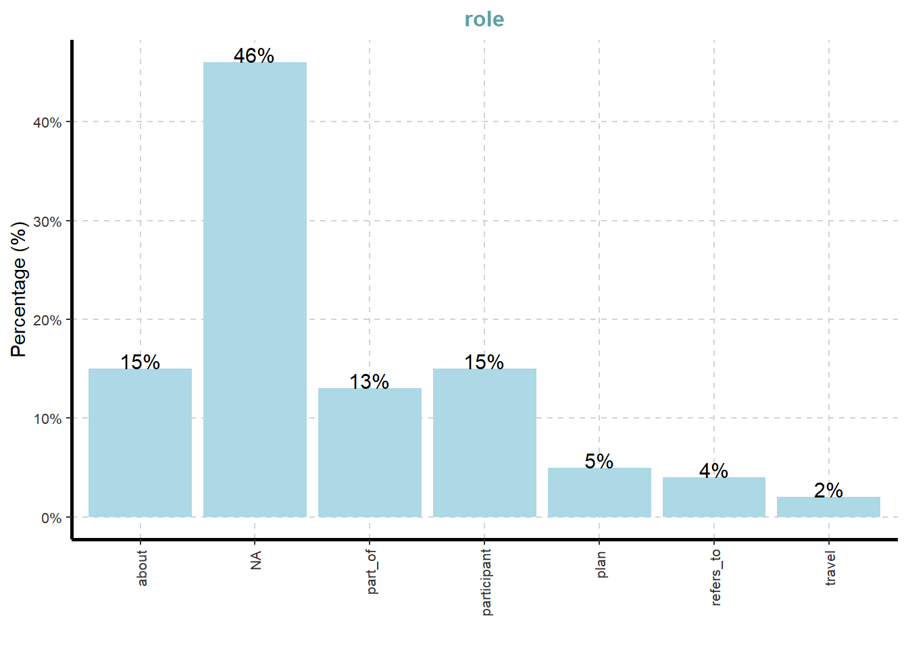
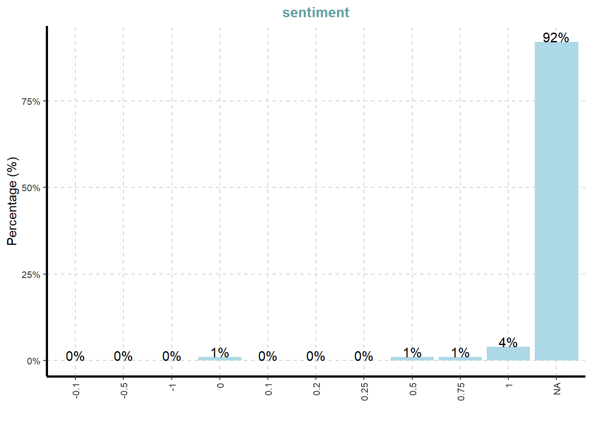
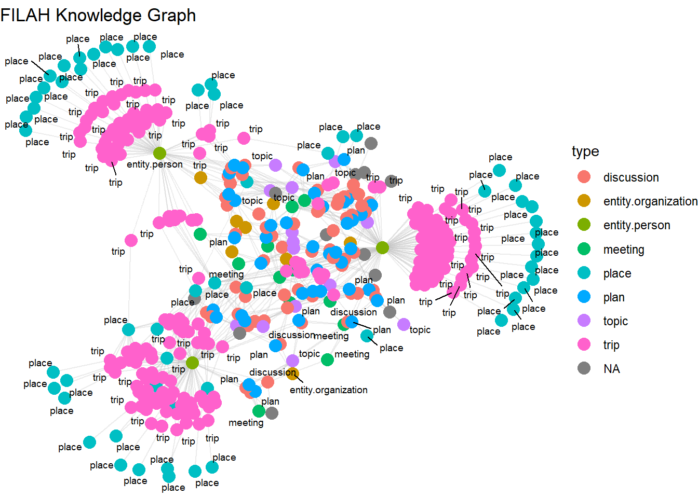

pacman::p_load(
tidyverse, jsonlite, sf, SmartEDA, tidygraph, ggrepel, ggraph,
data.table, DT, visNetwork, tidyr, naniar, skimr,
ggplot2, ggridges, ggalt
)Take-home Exercise 2
1 Overview
In this exercise, we explore Mini-Challenge 2 (MC2) from the VAST Challenge 2025, which centers on the theme of conflict over societal change within the fictional island nation of Oceanus.
Oceanus is a historically fishing-based island economy that is now rapidly transforming due to the growth of tourism. This economic shift has sparked conflict between two influential groups:
Fishing is Living and Heritage (FILAH) – advocates for the preservation of Oceanus’s fishing heritage and industry.
Tourism Raises OceanUs Together (TROUT) – champions the modern tourism economy as the path to prosperity.
Both groups claim the Commission on Overseeing the Economic Future of Oceanus (COOTEFOO) of bias in its support of development initiatives. As data analysts, our goal is to reconstruct an unbiased understanding of COOTEFOO’s activities and assess the validity of these accusations using data from both camps and a more complete combined dataset.
1.1 Tasks and Questions:
Based on the datasets that TROUT & FILAH have provided, use visual analytics to determine if each group’s accusations are supported by their own record set. In other words, develop a visualization to highlight bias (if present) in TROUT & FILAHS datasets. Is there evidence of bias in the COOTEFOO member actions in either dataset?
As a journalist, Ms. Moray would like a more complete picture of the COOTEFOO’s actions and activities. She has arranged to combine the data provided by TROUT and FILAH into a single knowledge graph along with additional records. Design visual analytics approaches for this combined knowledge graph to see how members of COOTEFOO spend their time. Is the committee as a whole biased? Provide visual evidence for your conclusions.
The TROUT and FILAH datasets are incomplete. Use your visualizations to compare and contrast conclusions drawn from the TROUT and FILAH datasets separately with behaviors in the whole dataset. Are the accusations of TROUT strengthened, weakened or unchanged when taken in context of the whole dataset?
Design a visualization that allows Ms. Moray to pick a person and highlight the differences in that person’s behavior as illustrated through the different datasets. Focus on the contrast in the story each dataset tells.
Pick at least one COOTEFOO member accused by TROUT. Illustrate how your understanding of their activities changed when using the more complete dataset.
What are the key pieces of evidence missing from the original TROUT data that most influenced the change in judgement.
Whose behaviors are most impacted by sampling bias when looking at the FILAH dataset in context of the other data?
Illustrate the bias of the FILAH data in the context of the whole dataset.
1.2 Getting Started
The following packages are used to support data wrangling, spatial analysis, visualization, and network exploration:
tidyverse: Core data science suite (dplyr,ggplot2, etc.)jsonlite: Read/write JSON structured datasf: Handle and visualize spatial vector data (simple features)SmartEDA: Generate automated EDA reportstidygraph: Tidy framework for network/graph dataggraph: Network plotting built on ggplot2ggrepel: Prevent overlapping text labels in plotsdata.table: High-performance data manipulationDT: Render interactive tables for web displayvisNetwork: Interactive visualizations of graph objectstidyr: Tools for tidying and reshaping datananiar: Explore and visualize missing dataskimr: Compact summaries for data framesggridges: Create ridgeline density plotsggalt: Additional geoms and stats for ggplot2
Show the code
2 Importing Knowledge Graph Data
First, we will analyze the 3 files by importing them into R using the code chunk below:
Show the code
filah <- fromJSON("data/FILAH.json")
trout <- fromJSON("data/TROUT.json")
journalist <- fromJSON("data/journalist.json")3 Data Preparation
3.1 Inspecting Knowledge Graph Structure
The datasets contain graph data, where nodes can be accessed via nodes and edges via links. The datasets have a lot of columns but we will only filter the relevant columns in this analysis.
Show the code
glimpse(filah)List of 5
$ directed : logi TRUE
$ multigraph: logi TRUE
$ graph : Named list()
$ nodes :'data.frame': 396 obs. of 17 variables:
..$ type : chr [1:396] "meeting" "meeting" "meeting" "meeting" ...
..$ date : chr [1:396] "Meeting 1" "Meeting 2" "Meeting 3" "Meeting 4" ...
..$ label : chr [1:396] "Meeting 1" "Meeting 2" "Meeting 3" "Meeting 4" ...
..$ id : chr [1:396] "Meeting_1" "Meeting_2" "Meeting_3" "Meeting_4" ...
..$ name : chr [1:396] NA NA NA NA ...
..$ role : chr [1:396] NA NA NA NA ...
..$ short_topic: chr [1:396] NA NA NA NA ...
..$ long_topic : chr [1:396] NA NA NA NA ...
..$ short_title: chr [1:396] NA NA NA NA ...
..$ long_title : chr [1:396] NA NA NA NA ...
..$ plan_type : chr [1:396] NA NA NA NA ...
..$ lat : num [1:396] NA NA NA NA NA NA NA NA NA NA ...
..$ lon : num [1:396] NA NA NA NA NA NA NA NA NA NA ...
..$ zone : chr [1:396] NA NA NA NA ...
..$ zone_detail: chr [1:396] NA NA NA NA ...
..$ start : chr [1:396] NA NA NA NA ...
..$ end : chr [1:396] NA NA NA NA ...
$ links :'data.frame': 765 obs. of 9 variables:
..$ role : chr [1:765] "part_of" "part_of" "part_of" "part_of" ...
..$ source : chr [1:765] "Meeting_1" "Meeting_1" "Meeting_1" "Meeting_1" ...
..$ target : chr [1:765] "fish_vacuum_Meeting_1_Introduction_Discussion" "fish_vacuum_Meeting_1_Introduction" "seafood_festival_Meeting_1_Discussion" "seafood_festival_Meeting_1_Feasibility" ...
..$ key : int [1:765] 0 0 0 0 0 0 0 0 0 0 ...
..$ sentiment: num [1:765] NA NA NA NA NA NA NA NA NA NA ...
..$ reason : chr [1:765] NA NA NA NA ...
..$ industry :List of 765
.. ..$ : NULL
.. ..$ : NULL
.. ..$ : NULL
.. ..$ : NULL
.. ..$ : NULL
.. ..$ : NULL
.. ..$ : NULL
.. ..$ : NULL
.. ..$ : NULL
.. ..$ : NULL
.. ..$ : NULL
.. ..$ : NULL
.. ..$ : NULL
.. ..$ : NULL
.. ..$ : NULL
.. ..$ : NULL
.. ..$ : NULL
.. ..$ : NULL
.. ..$ : NULL
.. ..$ : NULL
.. ..$ : NULL
.. ..$ : NULL
.. ..$ : NULL
.. ..$ : NULL
.. ..$ : NULL
.. ..$ : NULL
.. ..$ : NULL
.. ..$ : NULL
.. ..$ : NULL
.. ..$ : NULL
.. ..$ : NULL
.. ..$ : NULL
.. ..$ : NULL
.. ..$ : NULL
.. ..$ : NULL
.. ..$ : NULL
.. ..$ : NULL
.. ..$ : NULL
.. ..$ : NULL
.. ..$ : NULL
.. ..$ : NULL
.. ..$ : NULL
.. ..$ : NULL
.. ..$ : NULL
.. ..$ : NULL
.. ..$ : NULL
.. ..$ : NULL
.. ..$ : NULL
.. ..$ : NULL
.. ..$ : NULL
.. ..$ : NULL
.. ..$ : NULL
.. ..$ : NULL
.. ..$ : NULL
.. ..$ : NULL
.. ..$ : NULL
.. ..$ : NULL
.. ..$ : NULL
.. ..$ : NULL
.. ..$ : NULL
.. ..$ : NULL
.. ..$ : NULL
.. ..$ : NULL
.. ..$ : NULL
.. ..$ : NULL
.. ..$ : NULL
.. ..$ : NULL
.. ..$ : NULL
.. ..$ : NULL
.. ..$ : NULL
.. ..$ : NULL
.. ..$ : NULL
.. ..$ : NULL
.. ..$ : NULL
.. ..$ : NULL
.. ..$ : NULL
.. ..$ : NULL
.. ..$ : NULL
.. ..$ : NULL
.. ..$ : NULL
.. ..$ : NULL
.. ..$ : NULL
.. ..$ : NULL
.. ..$ : NULL
.. ..$ : NULL
.. ..$ : NULL
.. ..$ : NULL
.. ..$ : NULL
.. ..$ : NULL
.. ..$ : NULL
.. ..$ : NULL
.. ..$ : NULL
.. ..$ : NULL
.. ..$ : NULL
.. ..$ : NULL
.. ..$ : NULL
.. ..$ : NULL
.. ..$ : NULL
.. ..$ : NULL
.. .. [list output truncated]
..$ status : chr [1:765] NA NA NA NA ...
..$ time : chr [1:765] NA NA NA NA ...glimpse(trout)List of 5
$ directed : logi TRUE
$ multigraph: logi TRUE
$ graph : Named list()
$ nodes :'data.frame': 164 obs. of 17 variables:
..$ type : chr [1:164] "plan" "plan" "plan" "meeting" ...
..$ short_title: chr [1:164] "marine_life_deck_Meeting_12_Environmental_Impact_Report" "low_volume_crane_Meeting_8_Report" "deep_fishing_dock_Meeting_3_Maintenance_Plan" NA ...
..$ long_title : chr [1:164] "Present findings from the environmental impact study" "Report on travel and submit letter of support for low-volume unload crane" "Discuss maintenance plan and designate travel representatives" NA ...
..$ plan_type : chr [1:164] "Report" "report" "proposal" NA ...
..$ label : chr [1:164] "marine_life_deck_Meeting_12_Environmental_Impact_Report" "low_volume_crane_Meeting_8_Report" "deep_fishing_dock_Meeting_3_Maintenance_Plan" "Meeting 16" ...
..$ id : chr [1:164] "marine_life_deck_Meeting_12_Environmental_Impact_Report" "low_volume_crane_Meeting_8_Report" "deep_fishing_dock_Meeting_3_Maintenance_Plan" "Meeting_16" ...
..$ date : chr [1:164] NA NA NA "Meeting 16" ...
..$ short_topic: chr [1:164] NA NA NA NA ...
..$ long_topic : chr [1:164] NA NA NA NA ...
..$ lat : num [1:164] NA NA NA NA NA ...
..$ lon : num [1:164] NA NA NA NA NA ...
..$ zone : chr [1:164] NA NA NA NA ...
..$ zone_detail: chr [1:164] NA NA NA NA ...
..$ name : chr [1:164] NA NA NA NA ...
..$ role : chr [1:164] NA NA NA NA ...
..$ start : chr [1:164] NA NA NA NA ...
..$ end : chr [1:164] NA NA NA NA ...
$ links :'data.frame': 378 obs. of 9 variables:
..$ role : chr [1:378] "plan" "participant" "plan" "participant" ...
..$ source : chr [1:378] "marine_life_deck_Meeting_12_Environmental_Impact_Report" "marine_life_deck_Meeting_12_Environmental_Impact_Report" "low_volume_crane_Meeting_8_Report" "low_volume_crane_Meeting_8_Report" ...
..$ target : chr [1:378] "marine_life_deck" "Teddy Goldstein" "low_volume_crane" "Seal" ...
..$ key : int [1:378] 0 0 0 0 0 0 0 0 0 0 ...
..$ sentiment: num [1:378] NA -0.5 NA 0.1 NA NA NA NA NA NA ...
..$ reason : chr [1:378] NA "Prefers resources to be allocated toward the fishing industry." NA "Recognizes the crane's benefit to small-scale operations." ...
..$ industry :List of 378
.. ..$ : NULL
.. ..$ : chr "tourism"
.. ..$ : NULL
.. ..$ : chr "small vessel"
.. ..$ : NULL
.. ..$ : NULL
.. ..$ : NULL
.. ..$ : NULL
.. ..$ : NULL
.. ..$ : NULL
.. ..$ : NULL
.. ..$ : chr "tourism"
.. ..$ : NULL
.. ..$ : NULL
.. ..$ : chr [1:2] "large vessel" "small vessel"
.. ..$ : chr [1:2] "large vessel" "small vessel"
.. ..$ : NULL
.. ..$ : NULL
.. ..$ : chr "small vessel"
.. ..$ : NULL
.. ..$ : NULL
.. ..$ : NULL
.. ..$ : NULL
.. ..$ : NULL
.. ..$ : NULL
.. ..$ : NULL
.. ..$ : NULL
.. ..$ : NULL
.. ..$ : NULL
.. ..$ : NULL
.. ..$ : NULL
.. ..$ : NULL
.. ..$ : NULL
.. ..$ : NULL
.. ..$ : NULL
.. ..$ : chr [1:2] "large vessel" "small vessel"
.. ..$ : NULL
.. ..$ : NULL
.. ..$ : chr "tourism"
.. ..$ : NULL
.. ..$ : NULL
.. ..$ : chr "small vessel"
.. ..$ : NULL
.. ..$ : NULL
.. ..$ : NULL
.. ..$ : chr [1:2] "large vessel" "small vessel"
.. ..$ : chr [1:2] "large vessel" "small vessel"
.. ..$ : NULL
.. ..$ : NULL
.. ..$ : chr "large vessel"
.. ..$ : NULL
.. ..$ : NULL
.. ..$ : chr [1:2] "large vessel" "small vessel"
.. ..$ : NULL
.. ..$ : NULL
.. ..$ : NULL
.. ..$ : chr [1:2] "large vessel" "small vessel"
.. ..$ : NULL
.. ..$ : NULL
.. ..$ : NULL
.. ..$ : NULL
.. ..$ : NULL
.. ..$ : NULL
.. ..$ : NULL
.. ..$ : NULL
.. ..$ : NULL
.. ..$ : NULL
.. ..$ : chr "small vessel"
.. ..$ : NULL
.. ..$ : chr "tourism"
.. ..$ : NULL
.. ..$ : list()
.. ..$ : NULL
.. ..$ : NULL
.. ..$ : NULL
.. ..$ : NULL
.. ..$ : NULL
.. ..$ : NULL
.. ..$ : NULL
.. ..$ : chr "tourism"
.. ..$ : NULL
.. ..$ : chr "large vessel"
.. ..$ : NULL
.. ..$ : NULL
.. ..$ : chr "tourism"
.. ..$ : chr "tourism"
.. ..$ : NULL
.. ..$ : NULL
.. ..$ : NULL
.. ..$ : chr "large vessel"
.. ..$ : NULL
.. ..$ : chr "tourism"
.. ..$ : chr "tourism"
.. ..$ : NULL
.. ..$ : chr [1:2] "large vessel" "small vessel"
.. ..$ : chr [1:2] "large vessel" "small vessel"
.. ..$ : NULL
.. ..$ : NULL
.. ..$ : list()
.. .. [list output truncated]
..$ status : chr [1:378] NA NA NA NA ...
..$ time : chr [1:378] NA NA NA NA ...glimpse(journalist)List of 5
$ directed : logi TRUE
$ multigraph: logi TRUE
$ graph : Named list()
$ nodes :'data.frame': 740 obs. of 17 variables:
..$ type : chr [1:740] "meeting" "meeting" "meeting" "meeting" ...
..$ date : chr [1:740] "Meeting 1" "Meeting 2" "Meeting 3" "Meeting 4" ...
..$ label : chr [1:740] "Meeting 1" "Meeting 2" "Meeting 3" "Meeting 4" ...
..$ id : chr [1:740] "Meeting_1" "Meeting_2" "Meeting_3" "Meeting_4" ...
..$ name : chr [1:740] NA NA NA NA ...
..$ role : chr [1:740] NA NA NA NA ...
..$ short_topic: chr [1:740] NA NA NA NA ...
..$ long_topic : chr [1:740] NA NA NA NA ...
..$ short_title: chr [1:740] NA NA NA NA ...
..$ long_title : chr [1:740] NA NA NA NA ...
..$ plan_type : chr [1:740] NA NA NA NA ...
..$ lat : num [1:740] NA NA NA NA NA NA NA NA NA NA ...
..$ lon : num [1:740] NA NA NA NA NA NA NA NA NA NA ...
..$ zone : chr [1:740] NA NA NA NA ...
..$ zone_detail: chr [1:740] NA NA NA NA ...
..$ start : chr [1:740] NA NA NA NA ...
..$ end : chr [1:740] NA NA NA NA ...
$ links :'data.frame': 2436 obs. of 9 variables:
..$ role : chr [1:2436] "part_of" "part_of" "part_of" "part_of" ...
..$ source : chr [1:2436] "Meeting_1" "Meeting_1" "Meeting_1" "Meeting_1" ...
..$ target : chr [1:2436] "fish_vacuum_Meeting_1_Introduction_Discussion" "fish_vacuum_Meeting_1_Introduction" "seafood_festival_Meeting_1_Discussion" "seafood_festival_Meeting_1_Feasibility" ...
..$ key : int [1:2436] 0 0 0 0 0 0 0 0 0 0 ...
..$ sentiment: num [1:2436] NA NA NA NA NA NA NA NA NA NA ...
..$ reason : chr [1:2436] NA NA NA NA ...
..$ industry :List of 2436
.. ..$ : NULL
.. ..$ : NULL
.. ..$ : NULL
.. ..$ : NULL
.. ..$ : NULL
.. ..$ : NULL
.. ..$ : NULL
.. ..$ : NULL
.. ..$ : NULL
.. ..$ : NULL
.. ..$ : NULL
.. ..$ : NULL
.. ..$ : NULL
.. ..$ : NULL
.. ..$ : NULL
.. ..$ : NULL
.. ..$ : NULL
.. ..$ : NULL
.. ..$ : NULL
.. ..$ : NULL
.. ..$ : NULL
.. ..$ : NULL
.. ..$ : NULL
.. ..$ : NULL
.. ..$ : NULL
.. ..$ : NULL
.. ..$ : NULL
.. ..$ : NULL
.. ..$ : NULL
.. ..$ : NULL
.. ..$ : NULL
.. ..$ : NULL
.. ..$ : NULL
.. ..$ : NULL
.. ..$ : NULL
.. ..$ : NULL
.. ..$ : NULL
.. ..$ : NULL
.. ..$ : NULL
.. ..$ : NULL
.. ..$ : NULL
.. ..$ : NULL
.. ..$ : NULL
.. ..$ : NULL
.. ..$ : NULL
.. ..$ : NULL
.. ..$ : NULL
.. ..$ : NULL
.. ..$ : NULL
.. ..$ : NULL
.. ..$ : NULL
.. ..$ : NULL
.. ..$ : NULL
.. ..$ : NULL
.. ..$ : NULL
.. ..$ : NULL
.. ..$ : NULL
.. ..$ : NULL
.. ..$ : NULL
.. ..$ : NULL
.. ..$ : NULL
.. ..$ : NULL
.. ..$ : NULL
.. ..$ : NULL
.. ..$ : NULL
.. ..$ : NULL
.. ..$ : NULL
.. ..$ : NULL
.. ..$ : NULL
.. ..$ : NULL
.. ..$ : NULL
.. ..$ : NULL
.. ..$ : NULL
.. ..$ : NULL
.. ..$ : NULL
.. ..$ : NULL
.. ..$ : NULL
.. ..$ : NULL
.. ..$ : NULL
.. ..$ : NULL
.. ..$ : NULL
.. ..$ : NULL
.. ..$ : NULL
.. ..$ : NULL
.. ..$ : NULL
.. ..$ : NULL
.. ..$ : NULL
.. ..$ : NULL
.. ..$ : NULL
.. ..$ : NULL
.. ..$ : NULL
.. ..$ : NULL
.. ..$ : NULL
.. ..$ : NULL
.. ..$ : NULL
.. ..$ : NULL
.. ..$ : NULL
.. ..$ : NULL
.. ..$ : NULL
.. .. [list output truncated]
..$ status : chr [1:2436] NA NA NA NA ...
..$ time : chr [1:2436] NA NA NA NA ...3.2 Extracting the edges and nodes tables
Next, as_tibble() of tibble package package is used to extract the nodes and links tibble data frames from each of the dataframe into two separate tibble dataframes called nodes and edges respectively.
Show the code
filah_nodes <- as_tibble(filah$nodes)
filah_edges <- as_tibble(filah$links)trout_nodes <- as_tibble(trout$nodes)
trout_edges <- as_tibble(trout$links)journalist_nodes <- as_tibble(journalist$nodes)
journalist_edges <- as_tibble(journalist$links)4 Initial EDA
4.1 Frequency Distribution
4.1.1 Nodes Categorical Frequency Distribution
In the code chunk below, ExpCatViz() of SmartEDA package is used to reveal the frequency distribution of all categorical fields in each nodes tibble dataframe.
ExpCatViz(data=filah_nodes,
col="lightblue")[[1]]
[[2]]
[[3]]
[[4]]
[[5]]
Observation
Node Type : Nearly half (48%) of the nodes in FILAH are trip-related, indicating a strong emphasis on travel data. There is moderate representation of discussion (15%), place (15%), and plan (10%) nodes, while missing type values (NA) at around 3%.
Role: 99% of nodes have missing role values. There are only 3 known roles: 2 Members and 1 Committee Chair.
Zone: 82% of place nodes are missing zoning info. Among known zones, commercial dominates (14%).
ExpCatViz(data=trout_nodes,
col="lightblue")[[1]]
[[2]]
[[3]]
[[4]]
[[5]]
Observation
Node Type: more evenly distributed, with Discussion (24%), Plan (20%), and Place (18%) making up the majority. Trip nodes are notably lower at 11% compared to 48% in FILAH, suggesting that TROUT places greater emphasis on planning and discourse rather than travel activity. NA values are minimal at 2%.
Zone: - 80% missing, only government zone shows some visibility (12%).
Role: - 96% missing, but contains more variety than FILAH (includes Treasurer, Vice Chair).
ExpCatViz(data=journalist_nodes,
col="lightblue")[[1]]
[[2]]
[[3]]
Observation
Node Type: Strong emphasis on trip (46%) and place (21%) nodes, with plan (10%) and discussion (14%) also notable; NA values are minimal (~3%).
Role: 99% of role values are missing
Zone: 77% missing, but better coverage than FILAH or TROUT. commercial (12%) is the most visible zone type, followed by residential (4%) and government (4%).
4.1.2 Edges Categorical Frequency Distribution
We will also be using code chunk below that uses ExpCATViz() of SmartEDA package to reveal the frequency distribution of all categorical fields in the edges tibble dataframe.
ExpCatViz(data=filah_edges,
col="lightblue")[[1]]
[[2]]
[[3]]
ExpCatViz(data=trout_edges,
col="lightblue")[[1]]
[[2]]
[[3]]ExpCatViz(data=journalist_edges,
col="lightblue")[[1]]
[[2]]
[[3]]
Observation
Across all three datasets, the role field shows a high proportion of missing (NA) values, with JOURNALIST at 70%, FILAH at 46%, and TROUT at 25%, indicating limited role clarity—especially in the full dataset. The status attribute is also largely incomplete, with over 90% of entries missing in every dataset, limiting insights into project progression. For sentiment, although a small proportion of edges carry values, positive sentiment (value = 1) dominates across all datasets—FILAH (5%), TROUT (10%), and JOURNALIST (4%)—while over 75–90% of entries are NA. This highlights a critical gap in annotation completeness, constraining deeper interpretation of engagement tone or project state.
4.1.3 Nodes Numerical Frequency Distribution
Next, we will use the code chunk below that uses ExpNumViz() of SmartEDA package to reveal the frequency distribution of all numerical fields in the nodes tibble dataframe.
ExpNumViz(filah_nodes)[[1]]
[[2]]
ExpNumViz(trout_nodes)[[1]]
[[2]]ExpNumViz(journalist_nodes)[[1]]
[[2]]
Observation
The spatial density plots reveal notable differences in geographic coverage across the datasets. FILAH shows a bi-modal distribution in both latitude and longitude, with mild skewness, indicating a focus on two primary regions—likely aligned with fishing routes or coastal hubs.
TROUT, on the other hand, exhibits a more skewed latitude distribution and tighter clustering in longitude, suggesting activity is concentrated in fewer, likely policy- or tourism-related zones.
In contrast, the JOURNALIST dataset displays the most balanced and inclusive spatial distribution, combining patterns from both FILAH and TROUT. This makes JOURNALIST the best baseline for identifying potential geographic bias or omissions in the two advocacy group datasets.
4.1.4 Edges Numerical Frequency Distribution
Below, we will use the code chunk below that uses ExpNumViz() of SmartEDA package to reveal the frequency distribution of all numerical fields in the edges tibble dataframe.
ExpNumViz(filah_edges)[[1]]ExpNumViz(trout_edges)[[1]]
ExpNumViz(journalist_edges)[[1]]
Observation
All three datasets show a left-skewed sentiment distribution, indicating a tendency toward positive sentiment in recorded interactions. FILAH displays moderate skewness, suggesting selective positivity likely aligned with pro-fishing narratives. TROUT is more balanced, showing a wider range of sentiment and possibly greater objectivity. JOURNALIST has the strongest left skew and a sharp peak, reflecting a high concentration of positive sentiment—likely a result of broader coverage rather than selective reporting. This highlights how sentiment framing differs across datasets, with TROUT offering more variation, while FILAH and JOURNALIST lean more positive overall.
4.2 Check for Missing Values
Next, we will check the missing values in the dataset.
Show the code
# Filter to only columns with missing values
miss_summary_nodes <- bind_rows(
miss_var_summary(filah_nodes) %>% mutate(dataset = "FILAH"),
miss_var_summary(trout_nodes) %>% mutate(dataset = "TROUT"),
miss_var_summary(journalist_nodes) %>% mutate(dataset = "JOURNALIST")
) %>%
filter(n_miss > 0) %>%
select(dataset, variable, n_miss, pct_miss)
miss_summary_edges <- bind_rows(
miss_var_summary(filah_edges) %>% mutate(dataset = "FILAH"),
miss_var_summary(trout_edges) %>% mutate(dataset = "TROUT"),
miss_var_summary(journalist_edges) %>% mutate(dataset = "JOURNALIST")
) %>%
filter(n_miss > 0) %>%
select(dataset, variable, n_miss, pct_miss)
# Display filtered tables
DT::datatable(miss_summary_nodes)
DT::datatable(miss_summary_edges)
Observation
Across all datasets, key attributes such as role, zone, plan_type, and sentiment exhibit high number of missing values—exceeding 90% in most cases for FILAH and TROUT. The JOURNALIST dataset provides broader coverage but still lacks complete detail in certain fields. These gaps highlight the need to interpret findings cautiously and emphasize the importance of using the full dataset for bias assessment.
4.3 Check for Duplicate Values
In the code below we will check for any duplicate values in the dataset.
Show the code
# Check for duplicate IDs in each dataset
list(
FILAH = filah_nodes %>% summarise(duplicates = sum(duplicated(id))),
TROUT = trout_nodes %>% summarise(duplicates = sum(duplicated(id))),
JOURNALIST = journalist_nodes %>% summarise(duplicates = sum(duplicated(id)))
)$FILAH
# A tibble: 1 × 1
duplicates
<int>
1 0
$TROUT
# A tibble: 1 × 1
duplicates
<int>
1 0
$JOURNALIST
# A tibble: 1 × 1
duplicates
<int>
1 0
Duplicate ID Check
All three node datasets (FILAH, TROUT, and JOURNALIST) have unique id values with no duplicates, confirming structural integrity at the node level.
4.4 Edges and Nodes Overview
Before proceeding, we shall take a look at the edges and nodes data overview using the skim function, with the code below.
Show the code
skim(filah_edges)| Name | filah_edges |
| Number of rows | 765 |
| Number of columns | 9 |
| _______________________ | |
| Column type frequency: | |
| character | 6 |
| list | 1 |
| numeric | 2 |
| ________________________ | |
| Group variables | None |
Variable type: character
| skim_variable | n_missing | complete_rate | min | max | empty | n_unique | whitespace |
|---|---|---|---|---|---|---|---|
| role | 354 | 0.54 | 4 | 11 | 0 | 6 | 0 |
| source | 0 | 1.00 | 6 | 82 | 0 | 300 | 0 |
| target | 0 | 1.00 | 3 | 82 | 0 | 195 | 0 |
| reason | 656 | 0.14 | 23 | 152 | 0 | 28 | 0 |
| status | 712 | 0.07 | 7 | 11 | 0 | 4 | 0 |
| time | 600 | 0.22 | 19 | 19 | 0 | 160 | 0 |
Variable type: list
| skim_variable | n_missing | complete_rate | n_unique | min_length | max_length |
|---|---|---|---|---|---|
| industry | 0 | 1 | 7 | 0 | 2 |
Variable type: numeric
| skim_variable | n_missing | complete_rate | mean | sd | p0 | p25 | p50 | p75 | p100 | hist |
|---|---|---|---|---|---|---|---|---|---|---|
| key | 0 | 1.00 | 0.00 | 0.00 | 0 | 0.0 | 0.0 | 0 | 0 | ▁▁▇▁▁ |
| sentiment | 656 | 0.14 | 0.43 | 0.63 | -1 | 0.1 | 0.5 | 1 | 1 | ▂▁▃▂▇ |
skim(trout_edges)| Name | trout_edges |
| Number of rows | 378 |
| Number of columns | 9 |
| _______________________ | |
| Column type frequency: | |
| character | 6 |
| list | 1 |
| numeric | 2 |
| ________________________ | |
| Group variables | None |
Variable type: character
| skim_variable | n_missing | complete_rate | min | max | empty | n_unique | whitespace |
|---|---|---|---|---|---|---|---|
| role | 94 | 0.75 | 4 | 11 | 0 | 6 | 0 |
| source | 0 | 1.00 | 7 | 73 | 0 | 103 | 0 |
| target | 0 | 1.00 | 3 | 73 | 0 | 133 | 0 |
| reason | 296 | 0.22 | 34 | 102 | 0 | 26 | 0 |
| status | 342 | 0.10 | 7 | 11 | 0 | 5 | 0 |
| time | 302 | 0.20 | 19 | 19 | 0 | 56 | 0 |
Variable type: list
| skim_variable | n_missing | complete_rate | n_unique | min_length | max_length |
|---|---|---|---|---|---|
| industry | 0 | 1 | 6 | 0 | 2 |
Variable type: numeric
| skim_variable | n_missing | complete_rate | mean | sd | p0 | p25 | p50 | p75 | p100 | hist |
|---|---|---|---|---|---|---|---|---|---|---|
| key | 0 | 1.00 | 0.0 | 0.00 | 0 | 0 | 0.0 | 0 | 0 | ▁▁▇▁▁ |
| sentiment | 296 | 0.22 | 0.4 | 0.65 | -1 | 0 | 0.5 | 1 | 1 | ▁▂▅▂▇ |
skim(journalist_edges)| Name | journalist_edges |
| Number of rows | 2436 |
| Number of columns | 9 |
| _______________________ | |
| Column type frequency: | |
| character | 6 |
| list | 1 |
| numeric | 2 |
| ________________________ | |
| Group variables | None |
Variable type: character
| skim_variable | n_missing | complete_rate | min | max | empty | n_unique | whitespace |
|---|---|---|---|---|---|---|---|
| role | 1705 | 0.30 | 4 | 11 | 0 | 6 | 0 |
| source | 0 | 1.00 | 6 | 82 | 0 | 531 | 0 |
| target | 0 | 1.00 | 3 | 82 | 0 | 382 | 0 |
| reason | 2237 | 0.08 | 23 | 152 | 0 | 42 | 0 |
| status | 2338 | 0.04 | 7 | 11 | 0 | 5 | 0 |
| time | 1073 | 0.56 | 19 | 19 | 0 | 925 | 0 |
Variable type: list
| skim_variable | n_missing | complete_rate | n_unique | min_length | max_length |
|---|---|---|---|---|---|
| industry | 0 | 1 | 7 | 0 | 2 |
Variable type: numeric
| skim_variable | n_missing | complete_rate | mean | sd | p0 | p25 | p50 | p75 | p100 | hist |
|---|---|---|---|---|---|---|---|---|---|---|
| key | 0 | 1.00 | 0.00 | 0.00 | 0 | 0.00 | 0.00 | 0 | 0 | ▁▁▇▁▁ |
| sentiment | 2237 | 0.08 | 0.56 | 0.57 | -1 | 0.25 | 0.75 | 1 | 1 | ▁▁▂▃▇ |
skim(filah_nodes)| Name | filah_nodes |
| Number of rows | 396 |
| Number of columns | 17 |
| _______________________ | |
| Column type frequency: | |
| character | 15 |
| numeric | 2 |
| ________________________ | |
| Group variables | None |
Variable type: character
| skim_variable | n_missing | complete_rate | min | max | empty | n_unique | whitespace |
|---|---|---|---|---|---|---|---|
| type | 12 | 0.97 | 4 | 19 | 0 | 8 | 0 |
| date | 195 | 0.51 | 9 | 10 | 0 | 130 | 0 |
| label | 257 | 0.35 | 9 | 82 | 0 | 139 | 0 |
| id | 0 | 1.00 | 3 | 82 | 0 | 396 | 0 |
| name | 385 | 0.03 | 4 | 24 | 0 | 11 | 0 |
| role | 393 | 0.01 | 6 | 15 | 0 | 2 | 0 |
| short_topic | 382 | 0.04 | 11 | 23 | 0 | 14 | 0 |
| long_topic | 382 | 0.04 | 11 | 73 | 0 | 14 | 0 |
| short_title | 297 | 0.25 | 33 | 82 | 0 | 99 | 0 |
| long_title | 297 | 0.25 | 25 | 80 | 0 | 71 | 0 |
| plan_type | 355 | 0.10 | 6 | 12 | 0 | 9 | 0 |
| zone | 325 | 0.18 | 7 | 11 | 0 | 5 | 0 |
| zone_detail | 388 | 0.02 | 4 | 10 | 0 | 3 | 0 |
| start | 207 | 0.48 | 8 | 8 | 0 | 71 | 0 |
| end | 207 | 0.48 | 8 | 8 | 0 | 86 | 0 |
Variable type: numeric
| skim_variable | n_missing | complete_rate | mean | sd | p0 | p25 | p50 | p75 | p100 | hist |
|---|---|---|---|---|---|---|---|---|---|---|
| lat | 325 | 0.18 | -165.19 | 0.63 | -165.96 | -165.68 | -165.59 | -164.53 | -164.34 | ▅▆▁▁▇ |
| lon | 325 | 0.18 | 39.38 | 0.21 | 38.99 | 39.26 | 39.43 | 39.54 | 39.67 | ▆▁▃▆▇ |
skim(trout_nodes)| Name | trout_nodes |
| Number of rows | 164 |
| Number of columns | 17 |
| _______________________ | |
| Column type frequency: | |
| character | 15 |
| numeric | 2 |
| ________________________ | |
| Group variables | None |
Variable type: character
| skim_variable | n_missing | complete_rate | min | max | empty | n_unique | whitespace |
|---|---|---|---|---|---|---|---|
| type | 3 | 0.98 | 4 | 19 | 0 | 8 | 0 |
| short_title | 92 | 0.44 | 28 | 73 | 0 | 72 | 0 |
| long_title | 92 | 0.44 | 25 | 84 | 0 | 43 | 0 |
| plan_type | 131 | 0.20 | 6 | 12 | 0 | 8 | 0 |
| label | 61 | 0.63 | 7 | 73 | 0 | 103 | 0 |
| id | 0 | 1.00 | 3 | 73 | 0 | 164 | 0 |
| date | 133 | 0.19 | 9 | 10 | 0 | 31 | 0 |
| short_topic | 150 | 0.09 | 7 | 23 | 0 | 14 | 0 |
| long_topic | 150 | 0.09 | 11 | 73 | 0 | 14 | 0 |
| zone | 131 | 0.20 | 7 | 11 | 0 | 6 | 0 |
| zone_detail | 146 | 0.11 | 0 | 13 | 1 | 7 | 0 |
| name | 133 | 0.19 | 4 | 30 | 0 | 31 | 0 |
| role | 158 | 0.04 | 6 | 15 | 0 | 4 | 0 |
| start | 146 | 0.11 | 8 | 8 | 0 | 15 | 0 |
| end | 146 | 0.11 | 8 | 8 | 0 | 13 | 0 |
Variable type: numeric
| skim_variable | n_missing | complete_rate | mean | sd | p0 | p25 | p50 | p75 | p100 | hist |
|---|---|---|---|---|---|---|---|---|---|---|
| lat | 131 | 0.2 | -165.39 | 0.59 | -165.96 | -165.88 | -165.60 | -164.58 | -164.34 | ▇▅▁▁▅ |
| lon | 131 | 0.2 | 39.36 | 0.24 | 38.99 | 39.10 | 39.43 | 39.55 | 39.67 | ▇▁▃▆▇ |
skim(journalist_nodes)| Name | journalist_nodes |
| Number of rows | 740 |
| Number of columns | 17 |
| _______________________ | |
| Column type frequency: | |
| character | 15 |
| numeric | 2 |
| ________________________ | |
| Group variables | None |
Variable type: character
| skim_variable | n_missing | complete_rate | min | max | empty | n_unique | whitespace |
|---|---|---|---|---|---|---|---|
| type | 19 | 0.97 | 4 | 19 | 0 | 8 | 0 |
| date | 382 | 0.48 | 8 | 10 | 0 | 159 | 0 |
| label | 515 | 0.30 | 7 | 82 | 0 | 225 | 0 |
| id | 0 | 1.00 | 3 | 82 | 0 | 740 | 0 |
| name | 692 | 0.06 | 4 | 30 | 0 | 48 | 0 |
| role | 734 | 0.01 | 6 | 15 | 0 | 4 | 0 |
| short_topic | 725 | 0.02 | 7 | 23 | 0 | 15 | 0 |
| long_topic | 725 | 0.02 | 11 | 73 | 0 | 15 | 0 |
| short_title | 565 | 0.24 | 27 | 82 | 0 | 175 | 0 |
| long_title | 565 | 0.24 | 25 | 97 | 0 | 115 | 0 |
| plan_type | 666 | 0.10 | 6 | 12 | 0 | 10 | 0 |
| zone | 568 | 0.23 | 7 | 11 | 0 | 6 | 0 |
| zone_detail | 705 | 0.05 | 0 | 21 | 1 | 13 | 0 |
| start | 398 | 0.46 | 8 | 8 | 0 | 122 | 0 |
| end | 398 | 0.46 | 8 | 8 | 0 | 164 | 0 |
Variable type: numeric
| skim_variable | n_missing | complete_rate | mean | sd | p0 | p25 | p50 | p75 | p100 | hist |
|---|---|---|---|---|---|---|---|---|---|---|
| lat | 568 | 0.23 | -165.13 | 0.63 | -165.96 | -165.61 | -165.57 | -164.53 | -164.33 | ▅▆▁▁▇ |
| lon | 568 | 0.23 | 39.38 | 0.20 | 38.99 | 39.26 | 39.42 | 39.54 | 39.67 | ▅▁▃▇▆ |
4.5 Geographic Data Overview: Oceanus Zones and Road Network
To supplement the knowledge graph analysis with spatial context, we incorporate two geographic datasets:
Oceanus Zone Map (
oceanus_map.geojson): Defines land use zones across the island (e.g., residential, tourism, industrial).Road Network (
road_map.json): Represents the transportation infrastructure using node-link format with GPS coordinates.
These datasets provide spatial grounding for COOTEFOO committee activities, including meeting venues and travel routes. This helps identify geographic bias or clustering in committee decisions and movement patterns.
üìÇ Load Spatial Data
# Load geographic data
oceanus_map <- st_read("data/oceanus_map.geojson")Reading layer `oceanus_map' from data source
`D:\shartiono\ISSS608-VAA\Take-home_Ex\Take-home_Ex_2\data\oceanus_map.geojson'
using driver `GeoJSON'
Simple feature collection with 29 features and 6 fields
Geometry type: GEOMETRY
Dimension: XY
Bounding box: xmin: -167.0654 ymin: 38.07452 xmax: -163.2723 ymax: 40.67775
Geodetic CRS: WGS 84road_json <- fromJSON("data/road_map.json", simplifyDataFrame = TRUE)We then prepare the road network for inspection and visualize both datasets to confirm spatial integrity.
Show the Code
# Prepare road network data
road_nodes <- road_json$nodes %>%
mutate(id = as.character(id), x = longitude, y = latitude)
road_edges <- road_json$links %>%
rename(from = source, to = target) %>%
mutate(across(c(from, to), as.character))
# Preview structure of both datasets
glimpse(oceanus_map)Rows: 29
Columns: 7
$ Name <chr> "Suna Island", "Thalassa Retreat", "Makara Shoal"…
$ Description <chr> "Large island of Oceanus", "Smaller island of Oce…
$ type <chr> "Entity.Location.Region", "Entity.Location.Region…
$ Kind <chr> "Island", "Island", "Island", "Island", "Fishing …
$ Activities <list> "Residential", "Residential", "Recreation", <"To…
$ fish_species_present <list> <>, <>, <>, <>, <"Cod/Gadus n.specificatae", "Bi…
$ geometry <GEOMETRY [°]> MULTIPOLYGON (((-166.0111 3..., MULTIPOL…glimpse(road_nodes)Rows: 2,664
Columns: 8
$ zone <chr> "commercial", "commercial", "commercial", "commercial", "com…
$ city_name <chr> "Lomark", "Lomark", "Lomark", "Lomark", "Lomark", "Lomark", …
$ longitude <dbl> -165.5773, -165.5769, -165.5768, -165.5780, -165.5787, -165.…
$ latitude <dbl> 39.53082, 39.52992, 39.53158, 39.53109, 39.53041, 39.54057, …
$ id <chr> "48344443", "48344507", "48524007", "2135056313", "212811835…
$ name <chr> NA, NA, NA, NA, NA, NA, NA, NA, NA, NA, NA, NA, NA, NA, "Har…
$ x <dbl> -165.5773, -165.5769, -165.5768, -165.5780, -165.5787, -165.…
$ y <dbl> 39.53082, 39.52992, 39.53158, 39.53109, 39.53041, 39.54057, …# Visual preview: Oceanus zones and road network
par(mfrow = c(1, 2))
plot(oceanus_map$geometry,
main = "Oceanus Zones (GeoJSON)",
col = "lightblue", border = "gray")
plot(road_nodes$x, road_nodes$y,
main = "Road Network Nodes",
pch = 19, col = "darkred",
xlab = "Longitude", ylab = "Latitude")
par(mfrow = c(1, 1))5. Data Cleaning, Wrangling, and Visualization for Knowledge Graph
5.1 Building the Function
We define reusable functions to clean and wrangle the nodes and edges of each dataset into a graph structure and visualize the result. We will use id, type and label to build the function for Knowledge Graph.
Show the code
# Function to clean and build graph
build_graph_data <- function(nodes_df, edges_df) {
# Clean nodes
nodes_cleaned <- nodes_df %>%
mutate(id = as.character(id)) %>%
filter(!is.na(id)) %>%
distinct(id, .keep_all = TRUE) %>%
select(id, type, label)
# Clean edges
edges_cleaned <- edges_df %>%
rename(from = source, to = target) %>%
mutate(across(c(from, to), as.character)) %>%
filter(from %in% nodes_cleaned$id, to %in% nodes_cleaned$id)
# Simplified edge table for graph
edges_min <- edges_cleaned %>%
select(from, to, role)
# Build tidygraph object
graph_obj <- tbl_graph(
nodes = nodes_cleaned,
edges = edges_min,
directed = TRUE
)
# Return all elements for reuse
return(list(
nodes_cleaned = nodes_cleaned,
edges_cleaned = edges_cleaned,
edges_min = edges_min,
graph = graph_obj
))
}As several of ggraph layouts involve randomization, in order to ensure reproducibility, it is necessary to set the seed value before plotting. We will use the following function to visualize the knowledge graph:
Show the code
plot_graph_overview <- function(graph_obj, title = "Graph Overview") {
set.seed(1234) # Ensure reproducibility
ggraph(graph_obj, layout = "fr") +
geom_edge_link(alpha = 0.3, colour = "gray") +
geom_node_point(aes(color = type), size = 4) +
geom_node_text(aes(label = type), repel = TRUE, size = 2.5) +
ggtitle(title) +
theme_void()
}5.2 Visualizing the Knowledge Graph
we will use the functions set up earlier for each dataset to visualize the knowledge graph as follows:
filah_data <- build_graph_data(filah_nodes, filah_edges)
plot_graph_overview(filah_data$graph, "FILAH Knowledge Graph")
Insights — FILAH Knowledge Graph
The FILAH Knowledge Graph is strongly travel-oriented, with trip and place nodes dominating the structure. These nodes form tight clusters, particularly on the graph’s periphery, highlighting a dataset constructed heavily around physical movements and site visits. The central region connects a smaller set of plan, discussion, and topic nodes, indicating some internal deliberation, though not as extensively represented. The prevalence of pink (trip) and cyan (place) suggests a bias toward documenting activities tied to fishing zones and physical visits, aligning with FILAH’s focus. There are relatively few missing (NA) nodes, and entity.person nodes appear less central—implying limited metadata on individual involvement.
trout_data <- build_graph_data(trout_nodes, trout_edges)
plot_graph_overview(trout_data$graph, "TROUT Knowledge Graph")
Insights — TROUT Knowledge Graph
The TROUT Knowledge Graph presents a denser, more balanced core structure, emphasizing discussion, plan, and meeting nodes. These indicate a dataset centered on dialogue and strategy rather than physical movement. Trip and place nodes are present but largely positioned in the outer cluster, suggesting they play a supporting rather than dominant role in this narrative. The central cluster tightly links topics to discussions and plans, reflecting TROUT’s focus on tourism policy, planning, and civic engagement. Entity.person nodes are more visible here than in FILAH, showing clearer attribution of roles within planning processes. Overall, the structure reflects a policy-driven lens with a centralized documentation approach.
journalist_data <- build_graph_data(journalist_nodes, journalist_edges)
plot_graph_overview(journalist_data$graph, "JOURNALIST Knowledge Graph")
Insights — Journalist Knowledge Graph
The Journalist Knowledge Graph is the most comprehensive and integrated among the three. It merges the narrative strengths of both FILAH and TROUT datasets—featuring a rich, interconnected core of plans, discussions, topics, and meetings, while also showing extensive clusters of trips and places. The graph structure indicates a full lifecycle of committee activity: from discourse to field visits. Entity.person and entity.organization nodes are more evenly distributed and active, suggesting better attribution and data coverage. While there are more NA-labeled nodes compared to other graphs, the overall density and connectivity reveal a holistic portrayal of COOTEFOO’s activities, enabling clearer bias assessment when cross-referenced with the other two graphs.
5.3 Combining All Graphs for Section 6 Analysis
To support the comparative analysis in Section 6, we now construct a combined dataset from the three sources. This step ensures that all relevant nodes and edges are merged into a single structure for downstream bias evaluation using sentiment, centrality, and spatial analysis. The code is shown below:
Show the code
# Combine cleaned nodes and edges for integrated analysis
combined_nodes <- bind_rows(
trout_data$nodes_cleaned %>% mutate(source_dataset = "TROUT"),
filah_data$nodes_cleaned %>% mutate(source_dataset = "FILAH"),
journalist_data$nodes_cleaned %>% mutate(source_dataset = "JOURNALIST")
) %>%
distinct(id, .keep_all = TRUE)
combined_edges <- bind_rows(
trout_data$edges_cleaned %>% mutate(source_dataset = "TROUT"),
filah_data$edges_cleaned %>% mutate(source_dataset = "FILAH"),
journalist_data$edges_cleaned %>% mutate(source_dataset = "JOURNALIST")
) %>%
filter(from %in% combined_nodes$id, to %in% combined_nodes$id)5.4 COOTEFOO Member List
Next, we will examine the list of Name and Role variables that are present in each dataset to see the involvement of the COOTEFOO members, with the code below:
Show the code
# Set role hierarchy for custom ordering
role_order <- c("Committee Chair", "Vice Chair", "Treasurer", "Member")
# Combine and pivot the dataset
cootefoo_members_all <- bind_rows(
filah_nodes %>% filter(!is.na(role)) %>% mutate(source = "FILAH"),
trout_nodes %>% filter(!is.na(role)) %>% mutate(source = "TROUT"),
journalist_nodes %>% filter(!is.na(role)) %>% mutate(source = "JOURNALIST")
) %>%
distinct(name, role, source) %>%
mutate(present = TRUE) %>%
pivot_wider(
names_from = source,
values_from = present,
values_fill = FALSE
) %>%
mutate(role = factor(role, levels = role_order)) %>%
arrange(role, name)
# convert TRUE/FALSE to "✔" / ""
cootefoo_members_all_display <- cootefoo_members_all %>%
mutate(across(FILAH:JOURNALIST, ~ ifelse(.x, "✔", "")))
# View arranged table
cootefoo_members_all_display# A tibble: 6 × 5
name role FILAH TROUT JOURNALIST
<chr> <fct> <chr> <chr> <chr>
1 Seal Committee Chair "✔" ✔ ✔
2 Ed Helpsford Vice Chair "" ✔ ✔
3 Teddy Goldstein Treasurer "" ✔ ✔
4 Carol Limpet Member "✔" ✔ ✔
5 Simone Kat Member "✔" ✔ ✔
6 Tante Titan Member "" ✔ ✔
Insights — COOTEFOO Member Dataset Representation
All six COOTEFOO members are present in the JOURNALIST dataset, confirming its completeness. The TROUT dataset also includes all members, while FILAH is missing Ed Helpsford, Teddy Goldstein, and Tante Titan — all of whom hold senior or relevant committee positions. We should explore and investigate further.
6 Answering the Questions
6.1 Question 1
The Question
Based on the datasets that TROUT & FILAH have provided, use visual analytics to determine if each group’s accusations are supported by their own record set. In other words, develop a visualization to highlight bias (if present) in TROUT & FILAH’s datasets. Is there evidence of bias in the COOTEFOO member actions in either dataset?
6.1.1 üß≠ How Sentiment Is Analyzed
To analyze potential bias in each dataset, we extract sentiment scores linked to COOTEFOO members using the participant edges. These scores capture how positively or negatively each member responded to topics associated with Fishing or Tourism.
However, sentiment alone is not enough—context matters. That’s why we also examine the associated industry and reason columns to classify the sentiment into high-level categories:
Fishing
Tourism
Other
This approach ensures that when a member expresses a positive sentiment, we understand toward what. For example, a +1 score could mean “pro-fishing” in FILAH or “pro-tourism” in TROUT, depending on the topic context. We classify topics accordingly and compute average sentiment scores per member and per dataset.
6.1.2 Overall Sentiment - Bias Score Ridgeline
This ridgeline chart shows how the aggregate sentiment scores (bias scores) are distributed across the TROUT and FILAH datasets. A score near +1 suggests strong support for tourism, while a score near –1 suggests alignment with fishing interests. We will use blue colour to represent FILAH and yellow colour for TROUT.
Show the code
# Define COOTEFOO member names
cootefoo_members <- c("Seal", "Simone Kat", "Carol Limpet",
"Teddy Goldstein", "Ed Helpsford", "Tante Titan")
# Function to classify topic by industry
assign_topic_category <- function(industry, reason) {
industry <- tolower(industry)
reason <- tolower(reason)
case_when(
str_detect(reason, "housing") ~ "Other",
str_detect(industry, "tourism|tourist|wharf|travel|harbor|marina|port") |
str_detect(reason, "tourism|tourist|wharf|travel|harbor|marina|port") ~ "Tourism",
str_detect(industry, "fishing|vessel|dock|crane|fish") |
str_detect(reason, "fishing|vessel|dock|crane|fish") ~ "Fishing",
TRUE ~ "Other"
)
}
# Ensure edge tables exist
filah_edges <- as_tibble(filah$links)
trout_edges <- as_tibble(trout$links)
# Compute FILAH sentiment by member
filah_sentiment_by_member <- filah_edges %>%
filter(role == "participant",
!is.na(sentiment),
target %in% cootefoo_members,
!is.na(industry),
industry != "character(0)",
industry != "") %>%
mutate(
industry_clean = str_replace_all(industry, "c\\(|\\)|\"", ""),
industry_group = assign_topic_category(industry_clean, reason)
) %>%
group_by(target) %>%
summarise(avg_sentiment = mean(sentiment, na.rm = TRUE), .groups = "drop")
# Compute TROUT sentiment by member
trout_sentiment_by_member <- trout_edges %>%
filter(role == "participant",
!is.na(sentiment),
target %in% cootefoo_members,
!is.na(industry),
industry != "character(0)",
industry != "") %>%
mutate(
industry_clean = str_replace_all(industry, "c\\(|\\)|\"", ""),
industry_group = assign_topic_category(industry_clean, reason)
) %>%
group_by(target) %>%
summarise(avg_sentiment = mean(sentiment, na.rm = TRUE), .groups = "drop")
# Combine both datasets
bias_all <- bind_rows(
filah_sentiment_by_member %>%
rename(name = target, bias_avg = avg_sentiment) %>%
mutate(dataset = "FILAH"),
trout_sentiment_by_member %>%
rename(name = target, bias_avg = avg_sentiment) %>%
mutate(dataset = "TROUT")
)
# Filter to only COOTEFOO members
bias_all_filtered <- bias_all %>%
filter(name %in% cootefoo_members)
# Plot ridgeline chart of overall sentiment
ggplot(bias_all_filtered, aes(x = bias_avg, y = fct_rev(dataset), fill = dataset)) +
geom_density_ridges(
alpha = 0.7,
scale = 0.95,
color = "white",
size = 0.3
) +
scale_fill_manual(values = c("TROUT" = "#ffcc00", "FILAH" = "#1f78b4")) +
scale_x_continuous(
limits = c(-1, 1),
breaks = c(-1, 0, 1),
labels = c("Fishing Bias", "Neutral", "Tourism Bias")
) +
labs(
title = "Overall COOTEFOO Member Sentiment — FILAH vs TROUT",
subtitle = "Average sentiment score distribution by dataset",
x = "Bias Score",
y = NULL
) +
theme_minimal(base_size = 12) +
theme(
legend.position = "none",
axis.text.y = element_text(face = "bold"),
plot.title = element_text(face = "bold"),
plot.subtitle = element_text(margin = margin(b = 10))
)
Observation
FILAH member sentiments are centered around neutral-to-positive, with a slight lean toward tourism despite the group’s fishing-oriented stance. TROUT shows more polarized sentiment, including a member with strong pro-fishing sentiment (unexpected for a tourism advocacy group). This suggests each dataset presents a selective narrative that may not fully align with their stated agenda.
To better understand the potential bias, it’s important to examine how each individual COOTEFOO member is represented in the FILAH and TROUT datasets. To do this, we generate member-level sentiment visualizations to explore how sentiment scores vary across members and industries in each dataset.
6.1.3 Individual Member Sentiment
This chart breaks down how individual members in the FILAH and TROUT dataset express sentiment toward Fishing and Tourism.
Show the code
# Clean and transform FILAH sentiment data
filah_sentiment_by_member <- filah_edges %>%
filter(role == "participant",
!is.na(sentiment),
target %in% cootefoo_members,
!is.na(industry),
industry != "character(0)",
industry != "") %>%
mutate(
industry_clean = str_replace_all(industry, "c\\(|\\)|\"", ""),
industry_clean = tolower(industry_clean),
industry_group = assign_topic_category(industry_clean, reason)
) %>%
group_by(target, industry_group) %>%
summarise(
avg_sentiment = mean(sentiment, na.rm = TRUE),
.groups = "drop"
) %>%
filter(industry_group %in% c("Fishing", "Tourism"))
# Combined dot plot (no facets)
ggplot(filah_sentiment_by_member, aes(x = avg_sentiment, y = fct_rev(target))) +
geom_point(aes(color = industry_group), size = 5, position = position_dodge(width = 0.5)) +
geom_vline(xintercept = 0, linetype = "dashed", color = "gray60") +
scale_color_manual(values = c("Fishing" = "#1f78b4", "Tourism" = "#ffcc00")) +
scale_x_continuous(limits = c(-1, 1), breaks = seq(-1, 1, 0.5)) +
labs(
title = "COOTEFOO Member Sentiment — FILAH Dataset",
subtitle = "Each dot shows average sentiment toward Fishing or Tourism",
x = "Sentiment Score (–1: Oppose, +1: Support)",
y = NULL,
color = "Industry"
) +
theme_minimal(base_size = 13) +
theme(
plot.title = element_text(face = "bold"),
axis.text.y = element_text(face = "bold"),
legend.title = element_text(face = "bold")
)
Observation
Only 3 COOTEFOO members appear in FILAH: Seal, Carol Limpet, and Simone Kat. Seal remains neutral, while the other two show surprisingly positive sentiment toward tourism, not fishing. This undermines FILAH’s claimed fishing advocacy and reveals significant sampling bias in member representation.
# Clean and transform TROUT sentiment data
trout_sentiment_by_member <- trout_edges %>%
filter(role == "participant",
!is.na(sentiment),
target %in% cootefoo_members,
!is.na(industry),
industry != "character(0)",
industry != "") %>%
mutate(
industry_clean = str_replace_all(industry, "c\\(|\\)|\"", ""),
industry_clean = tolower(industry_clean),
industry_group = assign_topic_category(industry_clean, reason)
) %>%
group_by(target, industry_group) %>%
summarise(
avg_sentiment = mean(sentiment, na.rm = TRUE),
.groups = "drop"
) %>%
filter(industry_group %in% c("Fishing", "Tourism"))
ggplot(trout_sentiment_by_member, aes(x = avg_sentiment, y = fct_rev(target))) +
geom_point(aes(color = industry_group), size = 5, position = position_dodge(width = 0.5)) +
geom_vline(xintercept = 0, linetype = "dashed", color = "gray60") +
scale_color_manual(values = c("Fishing" = "#1f78b4", "Tourism" = "#ffcc00")) +
scale_x_continuous(limits = c(-1, 1), breaks = seq(-1, 1, 0.5)) +
labs(
title = "COOTEFOO Member Sentiment — TROUT Dataset",
subtitle = "Each dot shows average sentiment toward Fishing or Tourism",
x = "Sentiment Score (–1: Oppose, +1: Support)",
y = NULL,
color = "Industry"
) +
theme_minimal(base_size = 13) +
theme(
plot.title = element_text(face = "bold"),
axis.text.y = element_text(face = "bold"),
legend.title = element_text(face = "bold")
)
Observation
TROUT features Teddy Goldstein, Seal, and Ed Helpsford. Teddy expresses strong pro-fishing sentiment, contradicting TROUT’s tourism alignment. Seal is again neutral. TROUT omits several members (e.g., Simone Kat), and the presence of fishing support in a tourism dataset suggests selective inclusion to make a point or to avoid contradicting narratives.
Q1 Answer — Evidence of Bias in TROUT & FILAH
Both the TROUT and FILAH datasets reveal potential indicators of bias, particularly in the way sentiment is recorded and which COOTEFOO members are included or omitted.
FILAH includes only a subset of COOTEFOO members and primarily reflects positive sentiment toward tourism, which appears at odds with its stated advocacy for the fishing sector.
TROUT, while including more members, emphasizes voices that are critical of tourism and supportive of fishing, suggesting a narrative aligned with their stance.
These observations suggest that each dataset may reflect the priorities and framing choices of its source organization. However, the patterns of inclusion, omission, and sentiment warrant deeper exploration.
To better understand the extent and implications of these biases, the subsequent questions (Q2–Q4) will integrate a more complete dataset and examine structural, geographic, and individual-level behavior in context.
6.2 Question 2
The Question
- As a journalist, Ms. Moray would like a more complete picture of the COOTEFOO’s actions and activities. She has arranged to combine the data provided by TROUT and FILAH into a single knowledge graph along with additional records. Design visual analytics approaches for this combined knowledge graph to see how members of COOTEFOO spend their time. Is the committee as a whole biased? Provide visual evidence for your conclusions.
To answer this, we integrated the TROUT, FILAH, and JOURNALIST datasets into a single comprehensive knowledge graph. We use both network centrality and geographic activity patterns to determine whether the committee’s actions reflect a collective bias toward either industry.
6.2.1 Network Graph Analysis
The combined knowledge graph visualizes:
Edges by source dataset (TROUT = orange, FILAH = brown, JOURNALIST = green)
Nodes by sentiment bias (yellow = tourism, blue = fishing, grey = unknown)
Node size by degree centrality (activity/influence level)
Show the code
# Compute average sentiment per person
compute_bias <- function(nodes, edges) {
edges %>%
filter(!is.na(sentiment), str_detect(role, "participant")) %>%
filter(to %in% nodes$id) %>%
group_by(person = to) %>%
summarise(
bias_avg = mean(sentiment, na.rm = TRUE),
n_obs = n(),
.groups = "drop"
)
}
bias_lookup <- compute_bias(combined_nodes, combined_edges)
# Build combined graph with metrics
combined_graph <- tbl_graph(
nodes = combined_nodes,
edges = combined_edges,
directed = TRUE,
node_key = "id"
) %>%
activate(nodes) %>%
left_join(bias_lookup, by = c("id" = "person")) %>%
mutate(
degree = centrality_degree(mode = "all"),
cluster = group_infomap(),
bias_cat = case_when(
is.na(bias_avg) ~ NA_character_,
bias_avg >= 0 ~ "tourism",
TRUE ~ "fishing"
)
)
# Plot the network graph
set.seed(42)
ggraph(combined_graph, layout = "fr") +
geom_edge_link(aes(colour = source_dataset), alpha = 0.3) +
geom_node_point(aes(
size = degree,
colour = bias_cat,
alpha = if_else(is.na(bias_cat), 0.05, 0.9)
)) +
geom_node_text(aes(label = label), repel = TRUE, size = 2.5, alpha = 0.8) +
scale_edge_colour_manual(values = c(
TROUT = "#FFA500", # Orange
FILAH = "#8B4513", # Brown
JOURNALIST = "#33a02c" # Green
)) +
scale_colour_manual(values = c(
fishing = "#1f78b4", # Blue
tourism = "#FFD700" # Yellow
), na.value = "grey80") +
scale_alpha_identity() +
scale_size(range = c(2, 8)) +
labs(
title = "Combined COOTEFOO Network (Bias Highlighted, Others Dimmed)",
edge_colour = "Source Dataset",
colour = "Bias Category",
size = "Degree Centrality"
) +
theme_void()
Observation — Network Graph (Bias Highlighted)
The visualization shows that nodes with tourism-aligned sentiment (yellow) tend to be larger and more centrally located, while fishing-aligned nodes (blue) appear less connected and more peripheral. The JOURNALIST dataset contributes most of the connections across the network. This view reflects how sentiment categories are structurally embedded within the overall committee activity network.
6.2.2 Geographic Activity Analysis
To complement the network analysis, we examine the spatial movement of COOTEFOO members using trip records tagged with latitude and longitude. These records help reveal where board members travel across Oceanus and whether their movement patterns correspond to certain zone types (e.g., tourism, fishing, commercial).
This analysis leverages:
The Oceanus Zone Map (
oceanus_map.geojson) from Section 4.5, which defines land use classification.The Road Network (
road_map.json), which supports spatial orientation but is not directly used in the trip overlay.
Before extracting trip locations, we enrich the combined node dataset with latitude and longitude fields from the original JOURNALIST dataset to ensure coordinate data is available for spatial mapping.
Show the code
# Enrich combined_nodes with lat/lon from the journalist dataset
combined_nodes <- combined_nodes %>%
left_join(
journalist_nodes %>% select(id, lat, lon),
by = "id"
)The plot below shows board member trip locations, color-coded by member name, overlaid on the zoning map.
Show the code
# Step 1: Identify board members
board_members <- combined_nodes %>%
filter(type == "entity.person") %>%
select(person_id = id, member_name = label)
# Step 2: Extract trip-to-person edges
trip_participant_edges <- combined_edges %>%
filter(role == "participant") %>%
inner_join(board_members, by = c("to" = "person_id")) %>%
filter(str_detect(from, "trip")) %>%
select(trip_id = from, member_name)
# Step 3: Match trip nodes with location coordinates
cootefoo_trip_locs <- combined_nodes %>%
filter(type == "trip", !is.na(lat), !is.na(lon)) %>%
select(id, label, lat, lon) %>%
inner_join(trip_participant_edges, by = c("id" = "trip_id")) %>%
mutate(
latitude = as.numeric(lat),
longitude = as.numeric(lon)
)
# Step 4: Plot board member trips on Oceanus zone map
ggplot() +
geom_sf(data = oceanus_map, aes(fill = Kind), color = "black", alpha = 0.4) +
geom_point(data = cootefoo_trip_locs, aes(x = longitude, y = latitude, color = member_name),
size = 2, alpha = 0.8) +
labs(
title = "COOTEFOO Board Member Trips Over Oceanus Zones",
fill = "Zone Type",
color = "Board Member"
) +
theme_minimal()
Observation — Geographic View of Board Member Trips
This map shows COOTEFOO board member trips (black dots) overlaid on the Oceanus zoning map. Most trip locations are clustered near Island, City, and Ecological Preserve zones, while relatively few are located within or near Fishing Ground zones (blue areas). This spatial distribution suggests that board member activity, as captured through recorded trips, is more concentrated in non-fishing zones, offering geographic context to complement the network analysis.
6.2.3 Member Involvement by Dataset and Activity Type
To complement the earlier network graph, we insert a bar plot showing how many times each COOTEFOO member appears across different datasets and the type of engagement (e.g., meeting, site visit, etc.). This mirrors the approach seen in the reference link and helps Ms. Moray understand member activity depth and focus areas.
Show the code
# Filter only COOTEFOO members and participant roles
cootefoo_members <- c("Seal", "Simone Kat", "Carol Limpet",
"Teddy Goldstein", "Ed Helpsford", "Tante Titan")
member_activity <- combined_edges %>%
filter(from %in% cootefoo_members | to %in% cootefoo_members) %>%
pivot_longer(cols = c(from, to), names_to = "direction", values_to = "person") %>%
filter(person %in% cootefoo_members) %>%
count(person, source_dataset, name = "n") %>%
mutate(source_dataset = factor(source_dataset, levels = c("TROUT", "FILAH", "JOURNALIST")))
# Bar chart
ggplot(member_activity, aes(x = fct_reorder(person, n), y = n, fill = source_dataset)) +
geom_col(position = "dodge") +
scale_fill_manual(values = c("TROUT" = "#ffcc00", "FILAH" = "#1f78b4", "JOURNALIST" = "#33a02c")) +
labs(
title = "COOTEFOO Member Activity by Dataset",
subtitle = "Each bar shows the number of activities a member is linked to",
x = "Member",
y = "Activity Count",
fill = "Dataset"
) +
coord_flip() +
theme_minimal()
Observation — Dataset Participation by Member
This bar chart reveals notable disparities in dataset coverage across COOTEFOO members:
Tante Titan, Ed Helpsford, and Teddy Goldstein have substantial engagement logged in the JOURNALIST dataset but are largely missing or underrepresented in FILAH, confirming a sampling bias in that subset.
Simone Kat and Carol Limpet are prominently featured in FILAH, but absent or minimally recorded in TROUT, suggesting selective emphasis favoring tourism-leaning narratives.
Seal is the only member with relatively balanced representation across all three datasets, though still with variations in total activity count.
The JOURNALIST dataset captures the most complete engagement for every member, underscoring its critical value in correcting incomplete perspectives presented by TROUT and FILAH.
Together, this visualization strengthens the argument that no individual dataset tells the full story, and evaluating COOTEFOO’s behavior in context requires triangulating across all sources.
Answer — Question 2: Is COOTEFOO as a whole biased?
The combined analysis of network structure, geographic activity, and member engagement reveals that COOTEFOO as a whole shows operational bias toward tourism-related initiatives, even if this bias is not overtly declared.
In the network graph, nodes aligned with tourism sentiment (yellow) are more central and active than those aligned with fishing (blue), suggesting that discussions and plans about tourism are more influential within the committee. The JOURNALIST dataset, which contributes the majority of connections, provides the clearest evidence of this structural tilt.
The geographic trip overlay confirms this finding: COOTEFOO members predominantly travel to zones associated with urban development, islands, and ecological preserves—areas tied to tourism and infrastructure—while fishing grounds receive minimal attention.
Finally, the member activity bar chart highlights sampling bias in the advocacy datasets. Some members (e.g., Teddy Goldstein, Tante Titan) are active in the full dataset but underrepresented or omitted in TROUT and FILAH. This disparity reinforces the importance of using the full dataset when assessing committee behavior.
Taken together, the evidence suggests that while COOTEFOO may not be explicitly biased, its actions and priorities in practice show a systematic leaning toward tourism interests, largely underreported in the subset datasets.
6.3 Question 3
The Question
- The TROUT and FILAH datasets are incomplete. Use your visualizations to compare and contrast conclusions drawn from the TROUT and FILAH datasets separately with behaviors in the whole dataset. Are the accusations of TROUT strengthened, weakened or unchanged when taken in context of the whole dataset?
We compare how sentiment toward Fishing and Tourism is represented across TROUT, FILAH, and the full JOURNALIST dataset. This reveals whether either subset presents a skewed or selective view of COOTEFOO member attitudes. Discrepancies in sentiment distributions highlight potential bias or missing context.
Show the code
# Helper function to classify topic by industry
assign_topic_category <- function(industry, reason) {
industry <- tolower(industry)
reason <- tolower(reason)
case_when(
str_detect(reason, "housing") ~ "Other",
str_detect(industry, "tourism|tourist|wharf|travel|harbor|marina|port") |
str_detect(reason, "tourism|tourist|wharf|travel|harbor|marina|port") ~ "Tourism",
str_detect(industry, "fishing|vessel|dock|crane|fish") |
str_detect(reason, "fishing|vessel|dock|crane|fish") ~ "Fishing",
TRUE ~ "Other"
)
}
# Function to extract sentiment records
extract_sentiments <- function(edge_df, dataset_label) {
edge_df %>%
filter(role == "participant", !is.na(sentiment), !is.na(industry)) %>%
mutate(
industry_group = assign_topic_category(industry, reason),
dataset = dataset_label
) %>%
select(target, sentiment, industry_group, dataset)
}
# Apply to all three datasets
trout_sentiments <- extract_sentiments(trout_edges, "TROUT")
filah_sentiments <- extract_sentiments(filah_edges, "FILAH")
journalist_sentiments <- extract_sentiments(journalist_edges, "JOURNALIST")
# Combine into one tidy dataset
combined_sentiments <- bind_rows(trout_sentiments, filah_sentiments, journalist_sentiments)6.3.1üéª Sentiment Distribution by Industry and Dataset
This violin plot shows how each dataset portrays sentiment toward Fishing, Tourism, and Other topics. Wider shapes reflect more sentiment records. By comparing TROUT and FILAH to the full JOURNALIST dataset, we can identify patterns of omission or emphasis.
Show the code
### Violin Plot for Sentiment Comparison
ggplot(combined_sentiments, aes(x = industry_group, y = sentiment, fill = dataset)) +
geom_violin(trim = FALSE, scale = "width", alpha = 0.7) +
geom_jitter(aes(color = dataset), size = 1.4, width = 0.2, alpha = 0.5, show.legend = FALSE) +
facet_wrap(~ industry_group, scales = "free_x") +
scale_fill_manual(values = c(
"TROUT" = "#ffcc00",
"FILAH" = "#1f78b4",
"JOURNALIST" = "#33a02c"
)) +
scale_color_manual(values = c(
"TROUT" = "#ffcc00",
"FILAH" = "#1f78b4",
"JOURNALIST" = "#33a02c"
)) +
labs(
title = "Sentiment Toward Industry by Dataset",
subtitle = "Violin plots comparing TROUT, FILAH, and JOURNALIST sentiment",
x = "Industry Category",
y = "Sentiment Score",
fill = "Dataset"
) +
theme_minimal(base_size = 13) +
theme(
plot.title = element_text(face = "bold"),
strip.text = element_text(face = "bold")
)
Observation
Teddy Goldstein stands out with conflicting sentiment: strongly positive in TROUT and JOURNALIST on Fishing, but negative in TROUT on Tourism. FILAH omits his sentiment entirely. Tante Titan, absent from TROUT and FILAH, only appears in the JOURNALIST dataset. These gaps and contradictions suggest each subset selectively represents member behavior, underscoring the importance of cross-dataset analysis.
6.3.2 üìä Volume of Sentiment Records per Dataset
This stacked bar chart complements the violin plot by showing the total number of sentiment-tagged records per dataset, broken down by industry category. This directly exposes which datasets are underreporting certain industries, which helps explain why the sentiment heatmap has missing cells. The codes are shown below:
Show the code
# Count total sentiment records by dataset and industry
sentiment_volume <- combined_sentiments %>%
filter(industry_group %in% c("Fishing", "Tourism", "Other")) %>%
count(dataset, industry_group)
# Plot: Stacked bar chart of sentiment volume
ggplot(sentiment_volume, aes(x = dataset, y = n, fill = industry_group)) +
geom_col(position = "stack") +
scale_fill_manual(values = c(
"Fishing" = "#1f78b4",
"Tourism" = "#ffcc00",
"Other" = "gray70"
)) +
labs(
title = "Total Sentiment Records by Dataset and Industry",
subtitle = "Highlights coverage gaps in FILAH and TROUT",
x = "Dataset",
y = "Number of Sentiment Records",
fill = "Industry Category"
) +
theme_minimal(base_size = 13) +
theme(
plot.title = element_text(face = "bold"),
plot.subtitle = element_text(margin = margin(b = 10)),
legend.title = element_text(face = "bold")
)
Observation — Sentiment Volume by Dataset
The bar chart reveals major coverage disparities:
- JOURNALIST provides the most complete sentiment coverage, with nearly equal attention to Tourism, Fishing, and Other topics.
- FILAH heavily emphasizes Tourism, despite being a pro-fishing group, and contributes minimal sentiment records on Fishing.
- TROUT presents a narrower distribution with relatively few records overall, and underrepresents Tourism sentiment compared to expectations.
These gaps directly affect how COOTEFOO member sentiment appears in analysis—highlighting why sentiment conclusions based solely on TROUT or FILAH may be unreliable.
6.3.3üîç COOTEFOO Member-Level Sentiment Heatmap
This heatmap compares average sentiment scores for each COOTEFOO member by dataset and industry category. It highlights inconsistencies across data sources and reveals how individual member portrayals shift depending on which dataset is used. Blank cells represent missing sentiment data.
Show the code
# Define COOTEFOO members
cootefoo_members <- c("Seal", "Simone Kat", "Carol Limpet",
"Teddy Goldstein", "Ed Helpsford", "Tante Titan")
# Clean sentiment data: keep only COOTEFOO member targets
member_sentiments <- combined_sentiments %>%
filter(target %in% cootefoo_members) %>%
group_by(target, dataset, industry_group) %>%
summarise(avg_sentiment = mean(sentiment, na.rm = TRUE), .groups = "drop") %>%
mutate(column_id = paste(dataset, industry_group, sep = "_"))
# Reshape to wide format for heatmap-style display
sentiment_matrix <- member_sentiments %>%
select(name = target, column_id, avg_sentiment) %>%
pivot_wider(names_from = column_id, values_from = avg_sentiment)
# Create actual heatmap-style plot
sentiment_matrix_long <- sentiment_matrix %>%
pivot_longer(-name, names_to = "Dataset_Industry", values_to = "Sentiment")
ggplot(sentiment_matrix_long, aes(x = Dataset_Industry, y = fct_rev(name), fill = Sentiment)) +
geom_tile(color = "white") +
geom_text(aes(label = round(Sentiment, 2)), size = 3) +
scale_fill_gradient2(low = "#b2182b", mid = "white", high = "#2166ac", midpoint = 0, na.value = "grey90") +
labs(
title = "Sentiment Presence by COOTEFOO Member and Dataset",
subtitle = "Missing = not scored in that dataset/industry",
x = "Dataset × Industry", y = NULL, fill = "Avg Sentiment"
) +
theme_minimal(base_size = 12) +
theme(
plot.title = element_text(face = "bold"),
axis.text.x = element_text(angle = 45, hjust = 1)
)# Add count
member_sentiments <- combined_sentiments %>%
filter(target %in% cootefoo_members) %>%
group_by(target, dataset, industry_group) %>%
summarise(
avg_sentiment = mean(sentiment, na.rm = TRUE),
n_obs = n(),
.groups = "drop"
) %>%
mutate(label = paste0(round(avg_sentiment, 2), " (", n_obs, ")"),
column_id = paste(dataset, industry_group, sep = "_"))
Observation
The heatmap shows that while all six COOTEFOO members are structurally present in the TROUT dataset, only Seal, Ed Helpsford, and Teddy Goldstein have sentiment scores recorded. Tante Titan, Simone Kat, and Carol Limpet have no sentiment values in TROUT, despite being scored in the JOURNALIST dataset with moderate-to-positive sentiment—especially toward Tourism. This partial sentiment coverage skews TROUT’s representation, amplifying voices like Goldstein’s (strong pro-fishing) while silencing others who may offer more balanced or tourism-aligned perspectives.
Answer — Question 3: Are TROUT’s Accusations Strengthened, Weakened, or Unchanged?
TROUT asserts that the COOTEFOO board is biased in favor of the fishing industry and resistant to tourism development. However, this claim is weakened when TROUT is analyzed alongside the more complete JOURNALIST dataset.
The violin plot reveals that TROUT records include sentiment values toward both Fishing and Tourism, with several members expressing positive views on tourism, contradicting the central accusation. The sentiment distribution in TROUT actually mirrors the broader sentiment balance seen in JOURNALIST, undermining the claim that the board opposes tourism outright.
The heatmap further highlights internal inconsistency: while all six COOTEFOO members are structurally present in TROUT, only three (Seal, Ed Helpsford, and Teddy Goldstein) have sentiment data attached. The omission of sentiment values for Simone Kat, Carol Limpet, and Tante Titan—who are documented in the JOURNALIST dataset as expressing tourism-positive or balanced views—suggests that TROUT selectively includes voices that reinforce a fishing-biased narrative.
Finally, the sentiment volume bar chart shows that TROUT has fewer total sentiment records than JOURNALIST, and contributes only a narrow slice of the available context. FILAH, although more voluminous, also shows an unexpected skew toward tourism sentiment and underrepresents fishing.
Taken together, these visualizations demonstrate that TROUT’s dataset lacks key sentiment context and omits critical voices. Its accusations appear to be based on incomplete and selectively framed evidence. The more comprehensive JOURNALIST data offers a more nuanced and balanced picture, with COOTEFOO members engaging meaningfully with both industries.
TROUT’s narrative of systemic fishing bias within COOTEFOO is not substantiated when assessed in the full context. The omission of member sentiment, especially those favoring tourism, diminishes the credibility of the accusation.
6.4 Question 4
The Question
Design a visualization that allows Ms. Moray to pick a person and highlight the differences in that person’s behavior as illustrated through the different datasets. Focus on the contrast in the story each dataset tells.
Pick at least one COOTEFOO member accused by TROUT.
Illustrate how your understanding of their activities changed when using the more complete dataset.
What are the key pieces of evidence missing from the original TROUT data that most influenced the change in judgement?
Whose behaviors are most impacted by sampling bias when looking at the FILAH dataset in context of the other data?
Illustrate the bias of the FILAH data in the context of the whole dataset.
6.4.1 üó∫Ô∏è Building on Q1‚ÄìQ3
In Q1–Q3, we uncovered evidence of selective omission and framing across the TROUT and FILAH datasets. TROUT emphasized a pro-fishing stance while omitting planning-related reasoning. FILAH omitted multiple active members entirely. Using the full JOURNALIST dataset clarified that COOTEFOO member sentiment is more nuanced, with participation spanning fishing, tourism, and broader infrastructure concerns.
6.4.2üë§ Focal Member: Teddy Goldstein
Teddy was explicitly accused by TROUT of resisting tourism and favoring fishing. His record is:
Present in TROUT and JOURNALIST datasets
Absent from FILAH, indicating sampling bias
Shows contrasting portrayals between datasets
6.4.3 üìä Teddy‚Äôs Activity Record Count
We begin with a simple bar chart showing the number of Teddy’s engagements recorded across the three datasets.
Show the code
teddy_summary <- combined_edges %>%
filter(from == "Teddy Goldstein" | to == "Teddy Goldstein") %>%
count(source_dataset, name = "n") %>%
complete(source_dataset = c("TROUT", "FILAH", "JOURNALIST"), fill = list(n = 0))
ggplot(teddy_summary, aes(x = source_dataset, y = n, fill = source_dataset)) +
geom_col() +
scale_fill_manual(values = c(
"TROUT" = "#ffcc00",
"FILAH" = "#1f78b4",
"JOURNALIST" = "#33a02c"
)) +
labs(
title = "Teddy Goldstein: Records per Source",
x = "Dataset",
y = "Number of Records"
) +
theme_minimal() +
theme(legend.position = "none")
Observation
TROUT logs only a fraction of Teddy’s total engagements. He is completely omitted from FILAH. The complete JOURNALIST dataset records the majority of his interactions, showing a more balanced presence across tourism and fishing topics.
6.4.4 üìä Ego Network Visualization (static)
We now generate a static circular ego network using ggraph to illustrate how Teddy’s interactions differ by dataset.
Show the code
# Prepare ego network
teddy_edges <- combined_edges %>%
filter(from == "Teddy Goldstein" | to == "Teddy Goldstein") %>%
count(from, to, source_dataset, name = "weight")
teddy_nodes <- tibble(id = unique(c(teddy_edges$from, teddy_edges$to))) %>%
left_join(combined_nodes %>% select(id, label), by = "id") %>%
mutate(group = if_else(id == "Teddy Goldstein", "Selected", "Neighbour"))
teddy_graph <- tbl_graph(nodes = teddy_nodes, edges = teddy_edges, directed = TRUE)
# Static circular layout
set.seed(2025)
ggraph(teddy_graph, layout = "circle") +
geom_edge_link(aes(width = weight, colour = source_dataset),
alpha = 0.8, arrow = arrow(type = "closed", length = unit(2, "mm"))) +
scale_edge_colour_manual(values = c(
"TROUT" = "#ffcc00",
"FILAH" = "#1f78b4",
"JOURNALIST" = "#33a02c"
)) +
geom_node_point(aes(fill = group), shape = 21, size = 6, color = "black") +
geom_node_text(aes(label = label), repel = TRUE, size = 3.5) +
scale_fill_manual(values = c("Selected" = "firebrick", "Neighbour" = "steelblue")) +
scale_edge_width(range = c(0.4, 1.5)) +
theme_void() +
labs(title = "Teddy Goldstein’s Ego Network by Dataset")
Observation
This ego network shows a dense range of interactions for Teddy across many nodes. Green links (JOURNALIST) dominate, showing diverse participation, while yellow links (TROUT) are limited and skewed. Blue links (FILAH) are absent, confirming Teddy is completely missing from that dataset.
6.4.5 üï∏Ô∏è Ego Network (Interactive View)
To explore interactions in more depth, we include an interactive visNetwork version of the ego network.
Show the code
# Step 1: Prepare edges for visNetwork
teddy_vis_edges <- teddy_edges %>%
mutate(
color = case_when(
source_dataset == "TROUT" ~ "#ffcc00", # Yellow
source_dataset == "FILAH" ~ "#1f78b4", # Blue
source_dataset == "JOURNALIST" ~ "#33a02c", # Green
TRUE ~ "gray"
),
title = paste0("Source: ", source_dataset, "<br>Weight: ", weight),
arrows = "to"
) %>%
select(from, to, color, title, arrows)
# Step 2: Prepare nodes for visNetwork
teddy_vis_nodes <- teddy_nodes %>%
mutate(
label = coalesce(label, id),
shape = if_else(group == "Selected", "star", "dot"),
color = if_else(group == "Selected", "firebrick", "gray"),
title = paste0("<b>", label, "</b>")
)
# Step 3: Generate interactive network
visNetwork(teddy_vis_nodes, teddy_vis_edges, height = "700px", width = "100%") %>%
visIgraphLayout(layout = "layout_with_fr") %>%
visOptions(
highlightNearest = list(enabled = TRUE, degree = 1, hover = TRUE),
nodesIdSelection = list(enabled = TRUE, main = "Explore the network")
) %>%
visLegend(
addNodes = data.frame(
label = c("TROUT", "FILAH", "JOURNALIST", "Selected", "Neighbour"),
shape = c("dot", "dot", "dot", "star", "dot"),
color = c("#ffcc00", "#1f78b4", "#33a02c", "firebrick", "gray"),
stringsAsFactors = FALSE
),
useGroups = FALSE
) %>%
visLayout(randomSeed = 42)
Observation
This interactive visualization highlights Teddy Goldstein’s personal network across the three datasets.
Total interactions: 65 unique edge connections.
TROUT edges (yellow): 17 links recorded.
JOURNALIST edges (green): 48 links — the majority of Teddy’s engagement.
FILAH edges (blue): 0 — Teddy is completely absent in FILAH.
Node count: The network spans 65 nodes, with Teddy at the center (star shape, red), and all connected nodes shown as blue circles (neighbours).
Visual pattern:
The green spokes (JOURNALIST) radiate outward in all directions, connecting Teddy to a wide variety of meetings, trips, and discussions.
Yellow spokes (TROUT) are limited and concentrated to fewer topics, visually representing the constrained narrative captured by TROUT.
Blue spokes (FILAH) are absent, confirming FILAH omitted Teddy’s contributions entirely.
This layout offers immediate insight into the disparity in data coverage: the richness of Teddy’s documented activities in JOURNALIST versus his underrepresentation in TROUT and total absence in FILAH. The presence of both pro-tourism and pro-fishing topics in the green connections reveals the nuance in Teddy’s actual role, which is oversimplified or missing in the two advocacy datasets.
Answer — Q4
Teddy Goldstein is portrayed in the TROUT dataset as a clear opponent of tourism and a staunch supporter of fishing. While this characterization is partially accurate, it is derived from a limited subset of records. The full JOURNALIST dataset reveals a more nuanced profile: Teddy supports fishing-related infrastructure for its economic and operational efficiency, but also expresses concern over environmental impacts and participates in planning-related discussions. His critiques of tourism appear conditional—focused on instances where tourism development may jeopardize fishing livelihoods or environmental stability. By contrast, the FILAH dataset omits Teddy entirely, excluding his perspective from the narrative altogether.
This case highlights how bias emerges not only from framing, but from omission. The lack of context in TROUT, particularly missing reasoning behind sentiments, obscures Teddy’s planning and sustainability concerns. FILAH’s total exclusion removes any possibility of evaluating his role. When viewed in full, Teddy is best described as strategically pro-fishing, rather than blindly opposed to tourism. His story exemplifies why data completeness and contextual richness are critical for fair interpretation, and why relying on partial datasets can lead to misleading or polarized conclusions.
7 Conclusion
This analysis of the Oceanus COOTEFOO committee, drawn from the conflicting TROUT and FILAH datasets and enriched by the more complete JOURNALIST dataset, reveals critical insights into narrative bias, data omission, and the challenges of interpreting committee behavior from partial records.
In Question 1, we discovered both TROUT and FILAH datasets suffer from selection bias. TROUT includes sentiment values but favors framing aligned with tourism skepticism. FILAH, although expected to support fishing, surprisingly highlights tourism-positive sentiment among members and excludes several active individuals. The data showed how these advocacy datasets selectively emphasize or omit sentiment to support their agendas.
Question 2 leveraged the JOURNALIST dataset to build a complete picture. Through network centrality analysis and geographic trip mapping, we found that COOTEFOO’s overall activities lean toward tourism-related zones and central actors display tourism-positive sentiment. This suggests not explicit bias, but rather an operational tilt toward tourism-driven planning.
In Question 3, we showed how incomplete data distorts interpretation. The TROUT dataset weakens its own argument when contextualized: pro-tourism sentiment is present, and key figures with balanced perspectives are omitted. The FILAH dataset’s lack of sentiment coverage for multiple members—especially those active in the full dataset—further reduces its credibility.
Finally, Question 4 focused on Teddy Goldstein, a member accused by TROUT. TROUT paints Teddy as anti-tourism, but the full dataset reveals a more nuanced role: selectively supportive of fishing, environmentally conscious, and engaged in planning. FILAH omits him entirely, erasing a critical voice. This underscores the risks of assessing individual behavior through partial lenses.
Overall, these visual analytics demonstrate that no single dataset tells the full story. Cross-referencing multiple sources and employing network, sentiment, and spatial analysis is crucial to exposing narrative bias and ensuring a fair, evidence-based understanding of organizational behavior.